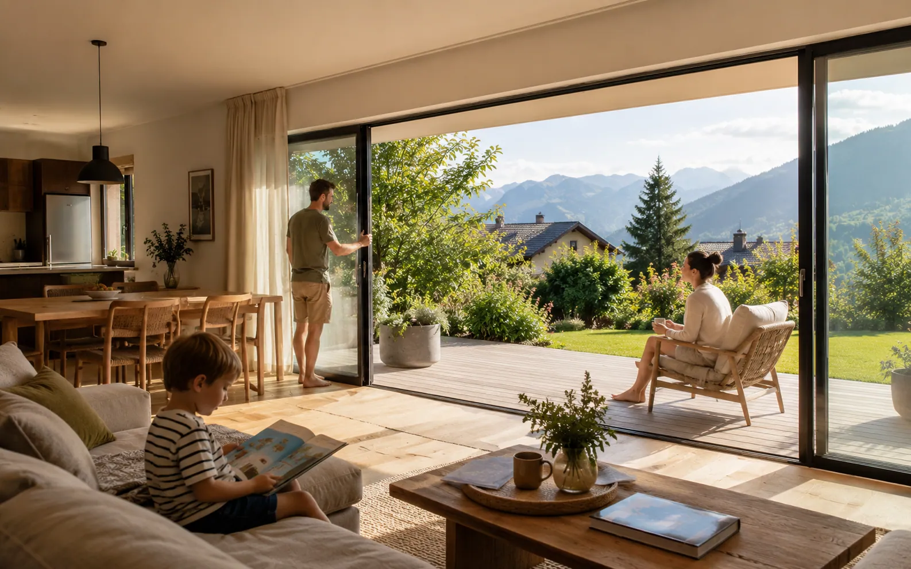
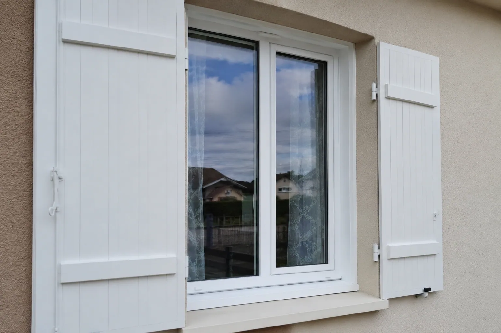
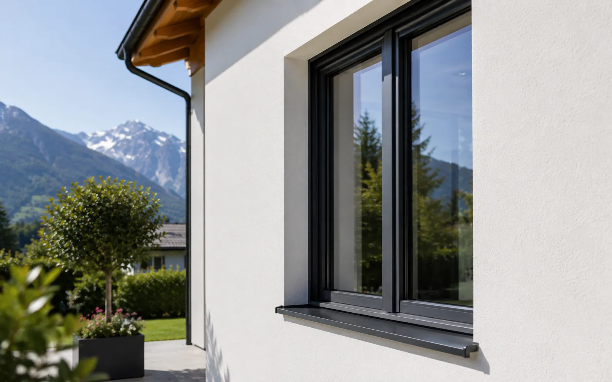

Baie coulissante ou galandage: quel choix pour ouvrir le séjour?
Clair de jour, seuil, isolation, passage, budget et travaux : le vrai comparatif entre coulissant et galandage.
Lire3 min
Matériaux, vitrage, pose, lumière, bruit, condensation et confort thermique.

Clair de jour, seuil, isolation, passage, budget et travaux : le vrai comparatif entre coulissant et galandage.

Dormant existant, perte de clair de jour, pont thermique, finitions : comment choisir la bonne méthode de pose.

Un comparatif clair entre PVC, aluminium, bois et mixte pour choisir selon budget, style, entretien et performances.

Le triple vitrage n'est utile que dans certains cas : exposition nord, altitude, pièce froide ou projet très isolé. Dans beaucoup de rénovations, un bon double vitrage bien posé suffit.

Prix, isolation, finesse des profils, entretien et rendu de façade : le vrai comparatif pour choisir sans se perdre.